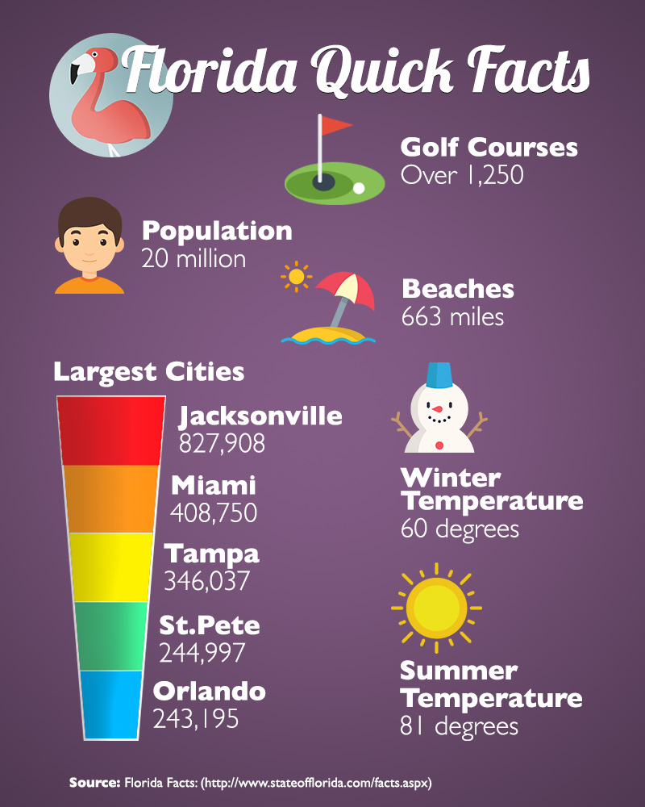

27 November, 2017
This is an infographic displaying some "quick facts" about the Sunshine State. I have to admit that these infographics are quite a lot of work. No wonder subscriptions to the New York Times and the Wall Street Journal aren't cheap!
I attempted to scale everything so it would still be readable, even at a small size. The 1000 x 800 size ended up being fairly large. In hindsight, I probably should have used smaller details that look good at this large format.
Arranging the factoids in a pleasing manner, without being too predictable, was a challenge. I intentionally didn't arrange things in a grid. Otherwise, it made it look like the home screen of a smart phone. The icons are from Flaticon, which was mentioned in the lecture.
The fonts are Lobster and Gill Sans. I intentially picked a slightly generic font for the header, since it is a generic topic. When it was done, I found that it looked a little bland, so I added some burning and dodging in places to add a bit of depth.
Credit: The icons are from Flaticon and were designed by Pixel Perfect, Smashicons and Freepik.
